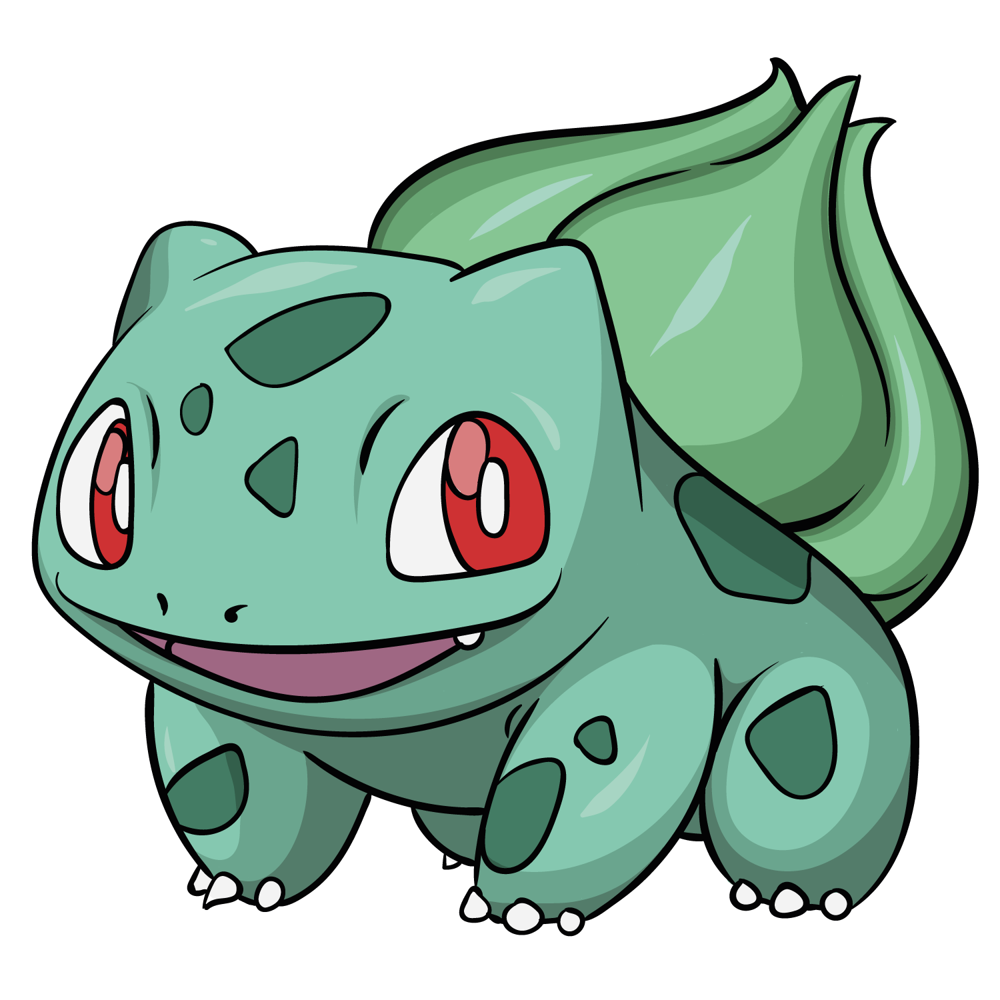

Bulbizarre

La graine sur le dos de Bulbizarre est une réserve de nutriments. Il la fait doucement pousser en absorbant les rayons du soleil, et emmagasine de l'énergie dedans en vue de son évolution. S'il dépense trop souvent son énergie, il n'évoluera pas car l'ouverture de son bulbe dépend de ses réserves de nutriments.